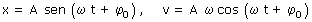
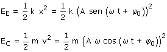
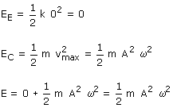

 Una partícula oscilando tiene energía cinética y energía potencial elástica.  La energía mecánica es la suma de estas dos. Como esta energía se mantiene constante puede calcularse la suma en cualquier punto del recorrido. Tomamos el paso por el origen cuando la energía elástica es cero y la cinética es máxima:  |